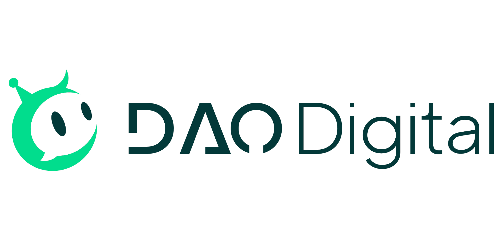

Thien Tan AI - Dao Digital
Full Stack Engineer · 09/2025 - 02/2026
CRM & Marketing Automation System (Team size: 1)
- Designed and built a CRM system to manage company and customer records, with integrated email sending and automation workflows, including data modeling and N8N-based automation scenarios for large-scale email deployments (~1,000 emails/day).
- Built an end-to-end automation solution covering content generation, delivery, deal management and sales pipeline tracking, reducing manual workload for marketing and sales teams by over 70%.
- Developed an inbound/outbound email management module, linking email conversations to leads and deals across all sales stages.
- Designed the backend architecture using Django, containerized and deployed with Docker, and implemented PostgreSQL as the primary database.
- Integrated AI and n8n to automate email content generation and marketing workflows.